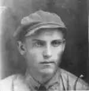
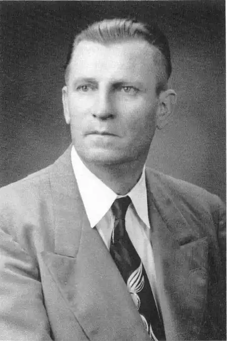

ГАЙВОРОНСЬКИЙ ВАСИЛЬ АНДРІЙОВИЧ
1906 (14.01) — 1972 (13.11)
Василь Андрійович Гайворонський потрапив за кордон вже сформованим письменником, на творчому рахунку якого було кілька оповідань і повістей, надрукованих у журналі "Літературний Донбас" та в інших періодичних виданнях. У 1933 році Державне видавництво у Харкові видало його книгу "Пугачівська рудня", але до читачів вона не дійшла: головного редактора журналу "Літературний Донбас" Г. Баглюка та його заступника В. Гайворонського було заарештовано і звинувачено в троцькізмі. А щоб широким масам було зрозуміліше "моральне падіння" цих письменників, у редагованому вже іншими редакторами журналі з'явилося таке роз'яснення: "Троцькістські дворушники знайшли тепле місце у донецькій письменницькій організації. У 1933 році були розвінчані троцькісти Баглюк, Соболенко та інші, а також їхні поплічники Гайворонський і Западинський. Закляті вороги, які пролізли в донецьку організацію, прагнули відірвати письменницьку організацію Донбасу від мас, не допускали талановиту літературну молодь до організації і журналу, настирливо друкували в "Літературному Донбасі" такі контрреволюційні твори, як роман "Гута" Ковалевського і "Темпи" Соболенка..." Троцькізмом як ширмою прикривався лише зовнішній фасад репресій в Донбасі на початку 30-х років. За цим явищем стояло одне: знищення української культури, і про це говорить хоч би той факт, що після арешту Баглюка і Гаиворонського журнал було повністю русифіковано. Уже в сьомому номері за 1935 рік українською мовою було надруковано лише одного вірша М. Рудя "Нареченій". Цю ситуацію коментує В. Гайворонський у своїй автобіографічній довідці на адресу видавця з Буенос-Айреса Юліана Середяка: "На кінець 1933 року у нас у Донбасі мав відбутися з'їзд письменників. Але ні мені, ні Баглюкові, ні комусь іншому з українських письменників бути на ньому не довелося. Кружляли чутки, що Москва проектує формальне приєднання Донбасу до Росії, а тому можна сподіватися репресій проти всього, що українське. І цей сподіваний наступ почався з того, що одного дня ГПУ закрило полотнищами машини, на яких друкувався "Літературний Донбас", присвячений з'їздові, поставило біля машин озброєну охорону, а вже вночі почалися арешти. Арештовано кілька душ, в тому числі Баглюка і мене. А решту узяли, під догляд. Звичайно, хто мав можливість, то повтікали. І в такий спосіб, позбувшися українців, купка росіян-письменників (П. Безпощадний, П. Сєвєров) захопила журнал у свої руки, зрусифікувала його, назвавши по-російському— "Литературный Донбасс"... Підтверджують висновки Гайворонського щодо репресій саме українських письменників опубліковані в журналі у кінці 1933 року "заходи" по поліпшенню його роботи, де серед кількох пунктів значилось таке: "...В 1934 році журнал, який в основному буде виходити російською мовою, значно поліпшить відділ художньої прози і поезії..." Отак у нашому краї сфабрикований проти троцькізму процес перетворився в репресії над діячами української культури. Звідки ж прийшов у літературу В. Гайворонський і якою була його подальша доля? Як повідомляє "Українська енциклопедія", що видана у Торонто (Канада) у 1984 році, Гайворонський Василь (псевдонім Гайдарівський) народився 1 грудня 1906 року у Костянтинівці на Донбасі. Був членом літгрупи "Забой" і Всеукраїнської асоціації пролетарських письменників. Висланий 1933 року за межі України. Утік і жив, переховуючись на Кавказі. У 1944 році переїхав до Львова. Звідти емігрував до Сполучених Штатів Америки". Багато його оповідань було надруковано у західноукраїнській еміграційній періодиці. Він автор оповідань і новел "Пугачівська рудня" (1933). "Ще одне кохання" (1946), "А світ такий гарний" (1962), "Заячий пастух" (1962). Помер 13 листопада 1972 року в Філадельфії. Похований на українському кладовищу у Баунд-Бруці. До сказаного в енциклопедії необхідно додати, що, крім названих творів Василя Гайворонського, в його доробку є ряд оповідань та повістей, виданих у різний час. Так, 1963 року в Буенос-Айресі (Бразилія) у видавництві вже згадуваного Юліана Середяка надруковано в календарі альманасі "Мітла" гумористичне оповідання "Сенсація знічев'я". А в 1986 році у штаті Колорадо (США) вийшов збірник оповідань і повістей "Циркачка". Як бачимо, географія видань В. Гаиворонського дуже широка. Це свідчення є перш за все ознакою непересічного обдарування письменника, творчість якого була в Україні під забороною. Про високе поцінування письменника еміграційною громадою може свідчити і той факт, що відомий український культурний діяч з Австралії Дмитро Нитченко включив у виданий ним збірник листів до нього видатних письменників діаспори і кореспонденції нашого земляка. Так, серед прізвищ Івана Багряного, Володимира Винниченка, Анатоля Гака (Мартин Задека), Анатолія Галана (Калиновського), Олекси Кобця (Варавви), Уласа Самчука і Володимира Гжицького (недіаспорянина) бачимо і прізвище В. Гайворонського. Автор вступної статті до цього видання Марко Павлишин зокрема пише, що вона, ця збірка, являє собою "збірний автопортрет" українських письменників, які творили нашу літературу на одному з найтяжчих етапів нашої історії, в емігрантських скитаннях і діяспорних скрутах". В цілому творчість Гайворонського можна поділити на два великі періоди: перший, коли він почав друкуватись у 20-х роках в періодиці Донеччини, а пізніше став заступником редактора журналу "Забой" — "Літературний Донбас"; другий — не початок сорокових років в Україні і далі — до кінця життєвого шляху в Америці. Кожен з цих умовно визначених відтинків має кардинальні відмінності у змісті написаного письменником. Так, у творчості В. Гайворонського двадцятих-початку 30-х років переважає виключно виробнича тематика. В цю пору особливого значення набирає в літературі тема Донбасу — в Москві наш край оголошується стратегічною базою побудови спочатку соціалізму, а пізніше й комунізму. То ж є закономірним, що молодий Гайворонський був захоплений хвилею індустріальної теми в літературі. Так, зокрема сторінки його повісті "Розминовка", яка друкувалася в журналі "Забой" у 1931—1932 роках, сповнені робітничого ентузіазму V виконанні та перевиконані всіляких планів: на виробництві (шахта Пугачівська) чи в робітничій казармі розмови точаться навколо одного й того ж: план, план, план... Виглядає це так, що люди ніби втратили нормальну людську мову, і всі їхні проблеми, інтереси зводяться тільки до вболівань за шахту. Хоча автору не можна відмовити в умінні зображувати сцени на виробництві, будувати діалоги та давати досить влучні характеристики героям (правда, як правило, однопланові). Іншої якості змісту і тематичної спрямованості набувають твори Гайворонського у сорокові та наступні роки, хоча тема Донбасу і залишається провідною. Так, в оповіданні "Циркачка" перед читачами постає рідна письменникові Костянтинівка, в центрі твору— доля дружини репресованого радянського службовця, артистки цирку Марусі, її прагнення простого людського щастя в екстремальних умовах сталінських репресій. У повісті "Світ такий гарний", написаній за кордоном, читачам розкривається картина рідного краю Гайворонського — це доля простих людей невеликого селища Кіндратівка над Торцем і в Слов'янському курорті, відомому на увесь Донбас. Рідний край письменник не забуває до свого останнього подиху. У закордонний період своєї творчості звертався В. Гайворонський і до теми життя українців у Сполучених Штатах. Зокрема, у цих творах розвинувся талант письменника як гумориста. Так, в оповіданні "Двоє друзів і містер Піт" показана комічна ситуація, в яку потрапили два емігранти з України Яків Куценко і його друг Гаррі Брус, до еміграції — Грицько Брусниця. Уявлення про капіталіста, сформовані у комуністичному суспільстві, виявились непридатними для оцінок американської дійсності. Герой з оповідання "Сенсація знічев'я" Василь теж потрапляє в смішну історію на американській землі, де його хоча й зустріли привітно, все ж не розуміють української сентиментальності і кепкують з нього. ...Далеко, аж за Тихим океаном, в американській землі, покоїться прах нашого земляка Василя Гайворонського, якому не пощастило побачити вільну, оновлювану Україну. Та вже летить у наш край його талановите слово, сповнене любові до рідної землі й віри у людське щастя. В.В.Оліфіренко